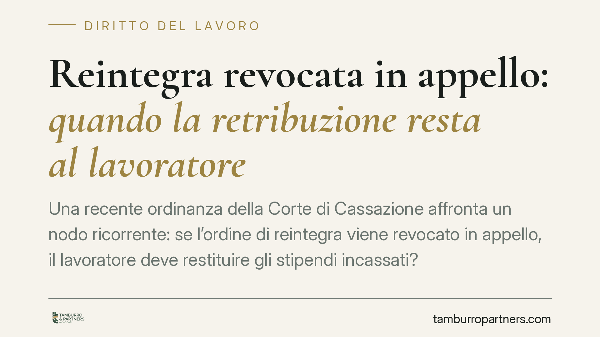

Reintegra revocata in appello: quando la retribuzione resta al lavoratore
Una recente ordinanza della Corte di Cassazione affronta un nodo ricorrente: se l'ordine di reintegra viene revocato in appello, il lavoratore deve restituire gli stipendi incassati? La risposta dipende da un fatto concreto: se durante il rientro ha svolto attività reale sotto la direzione dell'azienda, le somme potrebbero essere intoccabili. Un dettaglio che cambia l'esito economico della lite.

Il caso
Un lavoratore viene reintegrato per ordine del Tribunale e torna in servizio. In appello, però, la Corte riforma la decisione e dichiara legittimo il licenziamento. A questo punto il datore chiede la restituzione di quanto versato nel frattempo.
La questione non è teorica. Tocca la differenza tra una reintegra "sulla carta" e una reintegra effettiva. Nel primo caso il titolo provvisorio viene meno e, caduta la causa del pagamento, le somme sono in linea di principio ripetibili. Nel secondo caso entra in gioco un elemento ulteriore: il lavoro realmente prestato.
Inquadramento normativo
Sul piano processuale, la riforma della sentenza in appello travolge il provvedimento riformato: è l'effetto espansivo disciplinato dall'art. 336 c.p.c. L'obbligo di restituire quanto percepito in forza del titolo poi caducato discende invece dall'art. 389 c.p.c., che regola le restituzioni conseguenti alla riforma o cassazione della sentenza eseguita.
Va detto con chiarezza che la giurisprudenza sulla ripetibilità delle somme incassate in forza di un titolo provvisorio poi riformato non è uniforme. Un orientamento valorizza l'automatismo restitutorio quando viene meno la causa del pagamento; un altro introduce correttivi legati alla natura delle somme e alla posizione del lavoratore. Il punto, dunque, non si risolve in modo meccanico.
Qui interviene il lavoro effettivamente svolto. Se il dipendente, durante la riassunzione, ha prestato attività sotto le direttive aziendali — ossia ha operato come lavoratore subordinato ai sensi dell'art. 2094 c.c. — le somme percepite non sono più un semplice anticipo su un titolo instabile, ma la retribuzione di una prestazione realmente resa. E l'art. 2126 c.c. tutela chi ha lavorato: la prestazione di fatto eseguita produce effetti per il periodo in cui ha avuto esecuzione, anche quando il rapporto presenta vizi o cade il presupposto giuridico.
La chiave è quindi fattuale: non conta solo l'etichetta "reintegra", ma se l'azienda ha esercitato i propri poteri direttivi e organizzativi sul lavoratore rientrato.
Implicazioni pratiche
Le conseguenze cambiano a seconda del punto di vista.
Per il lavoratore. Se durante la reintegra ha realmente lavorato, le retribuzioni percepite possono risultare acquisite in via definitiva, anche dopo la revoca dell'ordine in appello. La tutela, però, presuppone di poter dimostrare l'effettività della prestazione: presenza, mansioni, ordini ricevuti, attività documentata. La reintegra meramente formale, senza impiego concreto, non offre la stessa protezione.
Per l'azienda. La reintegra non è un atto neutro. Impiegare il lavoratore, assegnargli compiti ed esercitare su di lui il potere direttivo significa dare vita a una prestazione reale, con le conseguenze retributive che ne derivano ex art. 2126 c.c. Diversa è la posizione di chi, in attesa dell'esito dell'appello, non attribuisce al dipendente alcuna attività effettiva.
È qui che si misura la distanza tra reintegra "sulla carta" e reintegra effettiva: la prima lascia più margini sul fronte restitutorio, la seconda tende a consolidare quanto versato.
Cosa fare in concreto
- Documentare l'effettività della prestazione: per il lavoratore rientrato, conservare prova di mansioni svolte, comunicazioni ricevute e attività eseguite è decisivo per invocare l'art. 2126 c.c.
- Valutare con attenzione la gestione del rientro: per l'azienda, è opportuno definire in modo consapevole se e come impiegare il dipendente reintegrato, misurando le ricadute retributive.
- Distinguere le somme in gioco: in caso di richiesta restitutoria, rileva separare ciò che corrisponde a prestazione realmente resa da ciò che è mero anticipo su un titolo poi riformato.
- Verificare gli estremi del titolo esecutivo: le modalità di esecuzione dell'ordine di reintegra incidono sull'eventuale obbligo di restituzione ex art. 389 c.p.c.
- Inquadrare la fattispecie prima di agire: data la non uniformità degli orientamenti, è prudente esaminare il singolo caso prima di impostare la domanda, restitutoria o difensiva.
---
*Contributo informativo a cura di Tamburro & Partners - Avv. Giuseppe Tamburro. Non costituisce parere legale.*
Ogni storia di lavoro ha i suoi tempi.
Se gestisci HR e vuoi un confronto su contenzioso, ispezioni o licenziamenti, scrivi allo studio. Ti rispondiamo entro un giorno lavorativo.